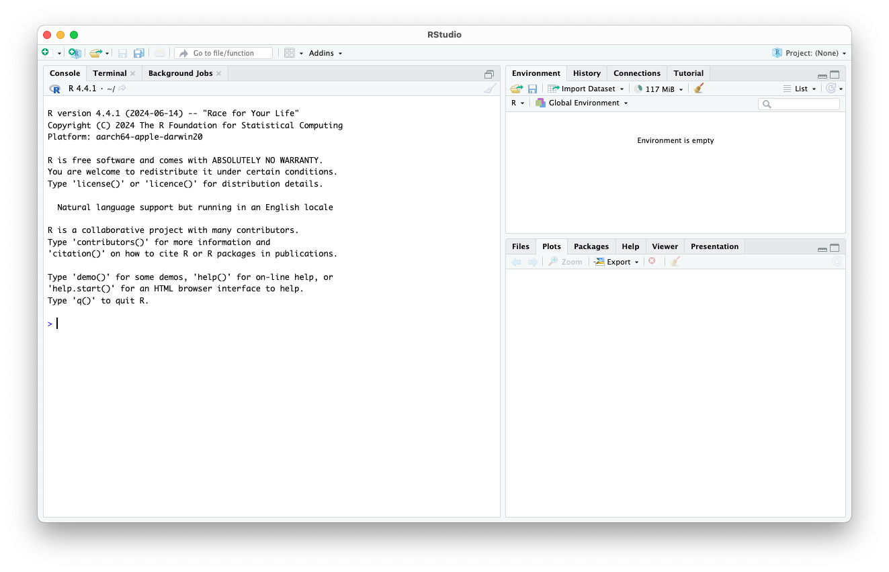
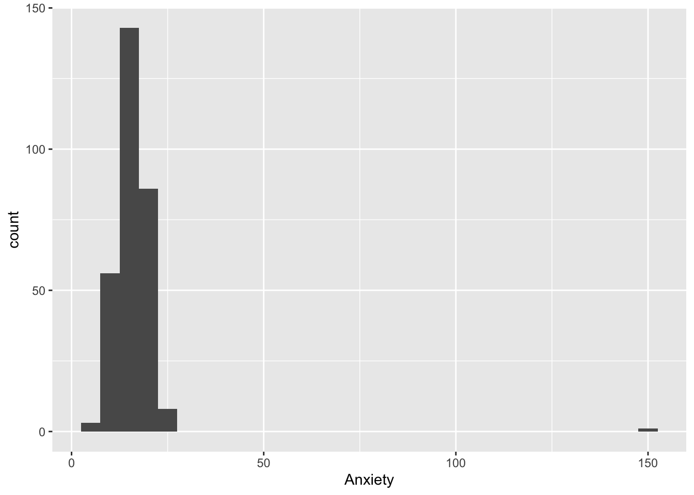
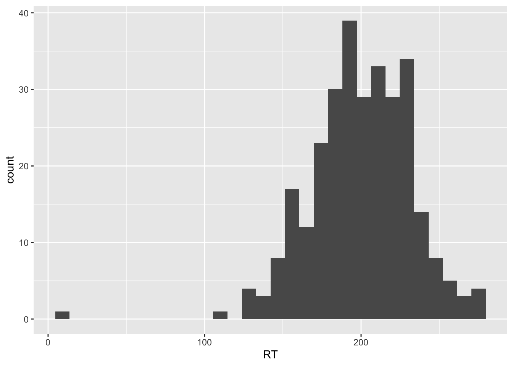
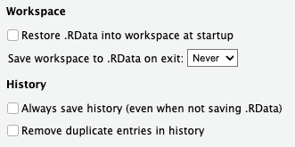

2+2[1] 4
R WorkshopProject: (None) in the upper right corner of RStudio, then Open project...R Workshop should now appear in upper right corner of RStudio>) and a blinking cursor2+2 and hit enter2+2[1] 4
2-5*> will switch to +
esc to get back the >monospaced and begin with [1]22/7[1] 3.142857
Ctrl+Shift+n (Windows)Cmd+Shift+n (Mac)Ctrl+Enter (Windows)Cmd+Return (Mac)Alt+Ctrl+R (Windows) or Opt+Cmd+R (Mac)# are not evaluated# Comments help remind you what each chunk of code does
# They're also are a great way to take notes!Ctrl+Enter or Cmd+Returnphantom.csv and save it to your workshop folder
read_csv() function
read_csv() is part of the tidyverse package – we’ll need to load tidyverse first# Load package (put at the top of your script!)
library(tidyverse)── Attaching core tidyverse packages ──────────────────────── tidyverse 2.0.0 ──
✔ dplyr 1.1.4 ✔ readr 2.1.5
✔ forcats 1.0.0 ✔ stringr 1.5.1
✔ ggplot2 3.5.1 ✔ tibble 3.2.1
✔ lubridate 1.9.3 ✔ tidyr 1.3.1
✔ purrr 1.0.2
── Conflicts ────────────────────────────────────────── tidyverse_conflicts() ──
✖ dplyr::filter() masks stats::filter()
✖ dplyr::lag() masks stats::lag()
ℹ Use the conflicted package (<http://conflicted.r-lib.org/>) to force all conflicts to become errors# Read data
workshop_data <- read_csv("phantom.csv")Rows: 300 Columns: 7
── Column specification ────────────────────────────────────────────────────────
Delimiter: ","
chr (3): Condition, Gender, Major
dbl (4): ID, SES, Anxiety, RT
ℹ Use `spec()` to retrieve the full column specification for this data.
ℹ Specify the column types or set `show_col_types = FALSE` to quiet this message.read_csv())"phantom.csv")<-) the function’s output to an object (workshop_data)<-)1:x <- 1/20x # Print x[1] 0.05workshop_data # Print (preview of) our data set# A tibble: 300 × 7
ID Condition Gender Major SES Anxiety RT
<dbl> <chr> <chr> <chr> <dbl> <dbl> <dbl>
1 1 LowDose M Psyc 4 17 213
2 2 LowDose M Hist 3 14 151
3 3 LowDose M Psyc 4 16 189
4 4 LowDose M Chem 1 17 240
5 5 LowDose F Hist 1 17 195
6 6 LowDose M Hist 1 19 187
7 7 LowDose M Hist 3 19 237
8 8 LowDose M Psyc 3 17 178
9 9 LowDose F Psyc 2 19 217
10 10 LowDose F Psyc 2 17 179
# ℹ 290 more rows# Gives an error -- pay attention to capitalization!
Workshop_dataError in eval(expr, envir, enclos): object 'Workshop_data' not found@,&,%)if, else, TRUE, FALSE)avg_anxiety, pre_test_data, post_test_databaseline.recall.of.vocabulary.terms, foo_bar, stuffc() and assign to an object to create a vectorv1 <- c(1,4,9,16,25)v1/2 # Divide vector by scalar[1] 0.5 2.0 4.5 8.0 12.5v1*v1 # Multiply vector by vector[1] 1 16 81 256 625sqrt(v1) # Run function on each value in vector[1] 1 2 3 4 5<-head(workshop_data) # Print first few rows of data frame# A tibble: 6 × 7
ID Condition Gender Major SES Anxiety RT
<dbl> <chr> <chr> <chr> <dbl> <dbl> <dbl>
1 1 LowDose M Psyc 4 17 213
2 2 LowDose M Hist 3 14 151
3 3 LowDose M Psyc 4 16 189
4 4 LowDose M Chem 1 17 240
5 5 LowDose F Hist 1 17 195
6 6 LowDose M Hist 1 19 187summary(workshop_data) # Get basic info for each column in data frame ID Condition Gender Major
Min. : 1.00 Length:300 Length:300 Length:300
1st Qu.: 75.75 Class :character Class :character Class :character
Median :150.50 Mode :character Mode :character Mode :character
Mean :150.50
3rd Qu.:225.25
Max. :300.00
SES Anxiety RT
Min. :1.000 Min. : 6.00 Min. : 13.0
1st Qu.:2.000 1st Qu.: 13.00 1st Qu.:181.0
Median :3.000 Median : 16.00 Median :201.0
Mean :2.637 Mean : 16.18 Mean :200.2
3rd Qu.:3.000 3rd Qu.: 18.00 3rd Qu.:222.0
Max. :5.000 Max. :151.00 Max. :279.0
NA's :3 NA's :3 glimpse(workshop_data) # Get preview of data frameRows: 300
Columns: 7
$ ID <dbl> 1, 2, 3, 4, 5, 6, 7, 8, 9, 10, 11, 12, 13, 14, 15, 16, 17, 1…
$ Condition <chr> "LowDose", "LowDose", "LowDose", "LowDose", "LowDose", "LowD…
$ Gender <chr> "M", "M", "M", "M", "F", "M", "M", "M", "F", "F", "M", "M", …
$ Major <chr> "Psyc", "Hist", "Psyc", "Chem", "Hist", "Hist", "Hist", "Psy…
$ SES <dbl> 4, 3, 4, 1, 1, 1, 3, 3, 2, 2, 3, 2, 1, 1, 3, 5, 3, 2, 2, 1, …
$ Anxiety <dbl> 17, 14, 16, 17, 17, 19, 19, 17, 19, 17, 20, NA, 19, 16, 15, …
$ RT <dbl> 213, 151, 189, 240, 195, 187, 237, 178, 217, 179, 220, 182, …?pnorm() # Info appears in Help pane (lower right)mean = 0, sd = 1pnorm(q = 2)[1] 0.9772499pnorm(2) # First (only) argument is assumed to be q[1] 0.9772499Tab with cursor inside parentheses to bring up list of argumentsReturn to insertTab?pnorm()$ to extract columnsAnxiety).AnxietyError in eval(expr, envir, enclos): object 'Anxiety' not foundAnxiety is inside workshop_data!$ to refer to variables (columns) inside data frames
workshop_data$Anxiety [1] 17 14 16 17 17 19 19 17 19 17 20 NA 19 16 15 22 20 21
[19] 16 19 24 17 19 23 20 23 20 19 16 17 18 20 18 17 17 18
[37] 15 16 17 20 16 14 17 16 21 23 16 20 14 15 20 21 19 20
[55] 16 19 17 14 17 18 21 17 16 15 17 13 13 18 22 23 18 NA
[73] 18 21 18 14 22 21 24 17 18 19 23 21 20 15 19 22 22 16
[91] 17 19 19 19 17 16 21 22 19 15 13 17 21 16 14 17 19 15
[109] 17 20 18 18 20 17 16 11 14 20 16 19 20 19 23 17 16 16
[127] 17 15 19 14 17 18 13 18 151 17 19 17 20 16 16 17 16 15
[145] 19 18 20 15 18 17 16 17 19 15 17 16 13 17 16 12 16 14
[163] 16 17 18 19 17 11 16 16 12 18 15 20 18 19 16 18 20 20
[181] 16 21 15 16 13 15 18 19 15 13 16 15 15 20 18 15 17 18
[199] 18 15 15 13 12 12 14 12 12 12 14 11 9 10 12 12 18 10
[217] 11 14 12 12 11 15 8 14 12 9 13 14 8 12 15 12 6 13
[235] 13 16 9 12 6 11 12 9 13 11 14 11 12 14 10 11 11 12
[253] 13 18 8 12 13 13 14 13 NA 14 13 8 11 15 11 7 17 13
[271] 10 9 10 13 13 12 13 13 11 14 13 11 12 14 11 14 13 13
[289] 16 13 10 11 17 13 10 10 14 13 11 12RT column from workshop_data as a vectorworkshop_data$RT [1] 213 151 189 240 195 187 237 178 217 179 220 182 231 177 212 239 191 204
[19] 129 233 269 177 241 277 185 202 187 245 194 213 219 246 207 232 163 225
[37] 142 179 176 NA 211 165 231 196 216 186 185 181 156 196 236 249 182 192
[55] 159 255 169 137 193 184 230 215 176 177 204 178 164 192 210 215 210 175
[73] 196 207 214 188 201 262 240 165 180 238 225 229 205 147 229 222 276 187
[91] 184 194 231 197 188 236 198 279 230 157 147 197 235 157 156 223 NA 172
[109] 214 230 207 175 212 204 206 168 176 269 213 232 256 229 233 202 195 184
[127] 200 173 198 169 226 242 193 179 13 166 233 196 249 185 177 213 190 157
[145] 220 221 217 216 209 204 173 216 218 168 222 173 198 198 193 112 189 183
[163] 196 196 215 235 182 160 210 191 158 207 202 222 231 219 201 190 218 226
[181] 206 219 180 182 155 208 194 225 184 157 192 152 194 232 188 171 146 215
[199] 241 182 226 194 211 208 201 197 232 223 229 151 182 159 175 200 246 171
[217] 207 200 208 224 198 215 124 247 219 157 221 228 170 186 245 218 158 211
[235] 229 233 149 196 175 132 195 166 186 194 221 158 208 230 159 177 198 175
[253] 202 274 138 186 207 206 223 219 257 195 192 126 170 247 202 146 236 229
[271] 209 145 204 239 221 193 202 196 200 195 204 189 189 210 190 226 233 219
[289] 258 214 228 156 217 228 NA 168 254 224 169 229count() to get number of cases by grouping variable(s)
$)count(workshop_data, Condition) # One grouping variable# A tibble: 3 × 2
Condition n
<chr> <int>
1 Control 100
2 HighDose 100
3 LowDose 100count(workshop_data, Condition, Major) # Multiple grouping variables# A tibble: 12 × 3
Condition Major n
<chr> <chr> <int>
1 Control Chem 14
2 Control Hist 29
3 Control Psyc 54
4 Control <NA> 3
5 HighDose Chem 16
6 HighDose Hist 26
7 HighDose Psyc 57
8 HighDose <NA> 1
9 LowDose Chem 13
10 LowDose Hist 43
11 LowDose Psyc 42
12 LowDose <NA> 2GenderGender and Conditioncount(workshop_data, Gender)# A tibble: 5 × 2
Gender n
<chr> <int>
1 F 155
2 M 131
3 N 9
4 O 1
5 <NA> 4count(workshop_data, Gender, Condition)# A tibble: 13 × 3
Gender Condition n
<chr> <chr> <int>
1 F Control 56
2 F HighDose 57
3 F LowDose 42
4 M Control 37
5 M HighDose 39
6 M LowDose 55
7 N Control 5
8 N HighDose 3
9 N LowDose 1
10 O Control 1
11 <NA> Control 1
12 <NA> HighDose 1
13 <NA> LowDose 2Anxiety with ggplot()
aes() lets us map variables onto dimensions of the plotgeom_histogram() specifies type of plot to drawggplot(data = workshop_data, aes(x = Anxiety)) + geom_histogram()`stat_bin()` using `bins = 30`. Pick better value with `binwidth`.Warning: Removed 3 rows containing non-finite outside the scale range
(`stat_bin()`).
Create a histogram of RT.
ggplot(data = workshop_data, aes(x = RT)) + geom_histogram()`stat_bin()` using `bins = 30`. Pick better value with `binwidth`.Warning: Removed 3 rows containing non-finite outside the scale range
(`stat_bin()`).
filter() to select rows that meet specific conditions:filter(workshop_data, Gender == "F") # All female participants# A tibble: 155 × 7
ID Condition Gender Major SES Anxiety RT
<dbl> <chr> <chr> <chr> <dbl> <dbl> <dbl>
1 5 LowDose F Hist 1 17 195
2 9 LowDose F Psyc 2 19 217
3 10 LowDose F Psyc 2 17 179
4 14 LowDose F Psyc 1 16 177
5 15 LowDose F Psyc 3 15 212
6 16 LowDose F Psyc 5 22 239
7 19 LowDose F Psyc 2 16 129
8 21 LowDose F Psyc 3 24 269
9 22 LowDose F Psyc 4 17 177
10 23 LowDose F Hist 3 19 241
# ℹ 145 more rowsfilter(workshop_data, Gender == "F", SES > 3) # Female AND high SES# A tibble: 36 × 7
ID Condition Gender Major SES Anxiety RT
<dbl> <chr> <chr> <chr> <dbl> <dbl> <dbl>
1 16 LowDose F Psyc 5 22 239
2 22 LowDose F Psyc 4 17 177
3 32 LowDose F Hist 4 20 246
4 67 LowDose F Psyc 4 13 164
5 80 LowDose F Hist 4 17 165
6 82 LowDose F Chem 4 19 238
7 98 LowDose F Hist 4 22 279
8 100 LowDose F Psyc 4 15 157
9 105 HighDose F <NA> 4 14 156
10 109 HighDose F Chem 5 17 214
# ℹ 26 more rowsfilter(workshop_data, Gender == "F" | SES > 3) # Female OR high SES# A tibble: 183 × 7
ID Condition Gender Major SES Anxiety RT
<dbl> <chr> <chr> <chr> <dbl> <dbl> <dbl>
1 1 LowDose M Psyc 4 17 213
2 3 LowDose M Psyc 4 16 189
3 5 LowDose F Hist 1 17 195
4 9 LowDose F Psyc 2 19 217
5 10 LowDose F Psyc 2 17 179
6 14 LowDose F Psyc 1 16 177
7 15 LowDose F Psyc 3 15 212
8 16 LowDose F Psyc 5 22 239
9 19 LowDose F Psyc 2 16 129
10 21 LowDose F Psyc 3 24 269
# ℹ 173 more rowsAnxiety scores under 30RT scores over 50filter(workshop_data, Anxiety < 30, RT >50)# A tibble: 293 × 7
ID Condition Gender Major SES Anxiety RT
<dbl> <chr> <chr> <chr> <dbl> <dbl> <dbl>
1 1 LowDose M Psyc 4 17 213
2 2 LowDose M Hist 3 14 151
3 3 LowDose M Psyc 4 16 189
4 4 LowDose M Chem 1 17 240
5 5 LowDose F Hist 1 17 195
6 6 LowDose M Hist 1 19 187
7 7 LowDose M Hist 3 19 237
8 8 LowDose M Psyc 3 17 178
9 9 LowDose F Psyc 2 19 217
10 10 LowDose F Psyc 2 17 179
# ℹ 283 more rowssummary():summary(workshop_data) ID Condition Gender Major
Min. : 1.00 Length:300 Length:300 Length:300
1st Qu.: 75.75 Class :character Class :character Class :character
Median :150.50 Mode :character Mode :character Mode :character
Mean :150.50
3rd Qu.:225.25
Max. :300.00
SES Anxiety RT
Min. :1.000 Min. : 6.00 Min. : 13.0
1st Qu.:2.000 1st Qu.: 13.00 1st Qu.:181.0
Median :3.000 Median : 16.00 Median :201.0
Mean :2.637 Mean : 16.18 Mean :200.2
3rd Qu.:3.000 3rd Qu.: 18.00 3rd Qu.:222.0
Max. :5.000 Max. :151.00 Max. :279.0
NA's :3 NA's :3 workshop_data_filteredsummary() on the new data frame to make sure the changes stuckworkshop_data_filtered <- filter(workshop_data, Anxiety < 30, RT >50)
summary(workshop_data_filtered) ID Condition Gender Major
Min. : 1.0 Length:293 Length:293 Length:293
1st Qu.: 77.0 Class :character Class :character Class :character
Median :152.0 Mode :character Mode :character Mode :character
Mean :150.9
3rd Qu.:225.0
Max. :300.0
SES Anxiety RT
Min. :1.000 Min. : 6.00 Min. :112.0
1st Qu.:2.000 1st Qu.:13.00 1st Qu.:182.0
Median :3.000 Median :16.00 Median :201.0
Mean :2.621 Mean :15.72 Mean :200.8
3rd Qu.:3.000 3rd Qu.:18.00 3rd Qu.:222.0
Max. :5.000 Max. :24.00 Max. :279.0 mutate()
Anxiety to z-scores#
workshop_data_filtered <- mutate(workshop_data_filtered,
Anxiety_Z = as.vector(scale(Anxiety)))
workshop_data_filtered# A tibble: 293 × 8
ID Condition Gender Major SES Anxiety RT Anxiety_Z
<dbl> <chr> <chr> <chr> <dbl> <dbl> <dbl> <dbl>
1 1 LowDose M Psyc 4 17 213 0.361
2 2 LowDose M Hist 3 14 151 -0.483
3 3 LowDose M Psyc 4 16 189 0.0796
4 4 LowDose M Chem 1 17 240 0.361
5 5 LowDose F Hist 1 17 195 0.361
6 6 LowDose M Hist 1 19 187 0.923
7 7 LowDose M Hist 3 19 237 0.923
8 8 LowDose M Psyc 3 17 178 0.361
9 9 LowDose F Psyc 2 19 217 0.923
10 10 LowDose F Psyc 2 17 179 0.361
# ℹ 283 more rowsConvert RT to z-sores in a new variable called RT_Z
workshop_data_filtered <- mutate(workshop_data_filtered,
RT_Z = as.vector(scale(RT)))
workshop_data_filtered# A tibble: 293 × 9
ID Condition Gender Major SES Anxiety RT Anxiety_Z RT_Z
<dbl> <chr> <chr> <chr> <dbl> <dbl> <dbl> <dbl> <dbl>
1 1 LowDose M Psyc 4 17 213 0.361 0.406
2 2 LowDose M Hist 3 14 151 -0.483 -1.66
3 3 LowDose M Psyc 4 16 189 0.0796 -0.393
4 4 LowDose M Chem 1 17 240 0.361 1.31
5 5 LowDose F Hist 1 17 195 0.361 -0.193
6 6 LowDose M Hist 1 19 187 0.923 -0.460
7 7 LowDose M Hist 3 19 237 0.923 1.21
8 8 LowDose M Psyc 3 17 178 0.361 -0.759
9 9 LowDose F Psyc 2 19 217 0.923 0.539
10 10 LowDose F Psyc 2 17 179 0.361 -0.726
# ℹ 283 more rowsselect() to select columns:# Individual columns, separated by commas
select(workshop_data_filtered, Condition, Major, Anxiety_Z)# A tibble: 293 × 3
Condition Major Anxiety_Z
<chr> <chr> <dbl>
1 LowDose Psyc 0.361
2 LowDose Hist -0.483
3 LowDose Psyc 0.0796
4 LowDose Chem 0.361
5 LowDose Hist 0.361
6 LowDose Hist 0.923
7 LowDose Hist 0.923
8 LowDose Psyc 0.361
9 LowDose Psyc 0.923
10 LowDose Psyc 0.361
# ℹ 283 more rows# Range of columns, separated by colon
# v1:v5 = "from v1 to v5"
select(workshop_data_filtered, ID:Gender, RT:RT_Z)# A tibble: 293 × 6
ID Condition Gender RT Anxiety_Z RT_Z
<dbl> <chr> <chr> <dbl> <dbl> <dbl>
1 1 LowDose M 213 0.361 0.406
2 2 LowDose M 151 -0.483 -1.66
3 3 LowDose M 189 0.0796 -0.393
4 4 LowDose M 240 0.361 1.31
5 5 LowDose F 195 0.361 -0.193
6 6 LowDose M 187 0.923 -0.460
7 7 LowDose M 237 0.923 1.21
8 8 LowDose M 178 0.361 -0.759
9 9 LowDose F 217 0.923 0.539
10 10 LowDose F 179 0.361 -0.726
# ℹ 283 more rowsAnxiety and RTworkshop_data_filtered <- select(workshop_data_filtered, ID:SES, Anxiety_Z:RT_Z)
workshop_data_filtered# A tibble: 293 × 7
ID Condition Gender Major SES Anxiety_Z RT_Z
<dbl> <chr> <chr> <chr> <dbl> <dbl> <dbl>
1 1 LowDose M Psyc 4 0.361 0.406
2 2 LowDose M Hist 3 -0.483 -1.66
3 3 LowDose M Psyc 4 0.0796 -0.393
4 4 LowDose M Chem 1 0.361 1.31
5 5 LowDose F Hist 1 0.361 -0.193
6 6 LowDose M Hist 1 0.923 -0.460
7 7 LowDose M Hist 3 0.923 1.21
8 8 LowDose M Psyc 3 0.361 -0.759
9 9 LowDose F Psyc 2 0.923 0.539
10 10 LowDose F Psyc 2 0.361 -0.726
# ℹ 283 more rowsselect() versus subsetting via []
v[n] selects nth element of vector vm[i,j] selects element at row i, column j of matrix or data frame mm[i, ] selects all elements in row im[ ,j] selects all elements in column jselect() is generally better option for selecting columns because it allows indexing by name:
# We can create/transform multiple variables within same `mutate()` function!
workshop_data_filtered <- mutate(workshop_data_filtered,
Condition = factor(Condition),
Gender = factor(Gender),
Major = factor(Major))
# Check work
summary(workshop_data_filtered) ID Condition Gender Major SES
Min. : 1.0 Control :98 F :153 Chem: 43 Min. :1.000
1st Qu.: 77.0 HighDose:98 M :126 Hist: 94 1st Qu.:2.000
Median :152.0 LowDose :97 N : 9 Psyc:150 Median :3.000
Mean :150.9 O : 1 NA's: 6 Mean :2.621
3rd Qu.:225.0 NA's: 4 3rd Qu.:3.000
Max. :300.0 Max. :5.000
Anxiety_Z RT_Z
Min. :-2.73134 Min. :-2.957579
1st Qu.:-0.76366 1st Qu.:-0.626208
Median : 0.07963 Median : 0.006593
Mean : 0.00000 Mean : 0.000000
3rd Qu.: 0.64182 3rd Qu.: 0.706004
Max. : 2.32840 Max. : 2.604407 levels()# Use $ to extract the column from the data set
levels(workshop_data_filtered$Gender)[1] "F" "M" "N" "O"levels(workshop_data_filtered$Condition)[1] "Control" "HighDose" "LowDose" GenderConditionfct_relevel() to change order:workshop_data_filtered <- mutate(workshop_data_filtered,
Condition = fct_relevel(Condition, "Control", "LowDose", "HighDose"))
levels(workshop_data_filtered$Condition)[1] "Control" "LowDose" "HighDose"fct_recode() to replace factor labels (“new” = “old”)levels(workshop_data_filtered$Gender)[1] "F" "M" "N" "O"workshop_data_filtered <- mutate(workshop_data_filtered,
Gender = fct_recode(Gender,
"Female" = "F",
"Male" = "M",
"Non-binary" = "N",
"Other" = "O"))
levels(workshop_data_filtered$Gender)[1] "Female" "Male" "Non-binary" "Other" # Per earlier summary statistics, should be mainly Male or Female
count(workshop_data_filtered, Gender)# A tibble: 5 × 2
Gender n
<fct> <int>
1 Female 153
2 Male 126
3 Non-binary 9
4 Other 1
5 <NA> 4summarise() to get descriptive statistics by group
.by# Mean and SD of SES, by Condition
summarise(workshop_data_filtered,
SES_M = mean(SES),
SES_SD = sd(SES),
n = n(), # Number of cases
.by = Condition)# A tibble: 3 × 4
Condition SES_M SES_SD n
<fct> <dbl> <dbl> <int>
1 LowDose 2.69 1.09 97
2 HighDose 2.51 1.04 98
3 Control 2.66 1.22 98# By condition and major
summarise(workshop_data_filtered,
SES_M = mean(SES),
SES_SD = sd(SES),
n = n(), # Number of cases
.by = c(Condition,Major))# A tibble: 12 × 5
Condition Major SES_M SES_SD n
<fct> <fct> <dbl> <dbl> <int>
1 LowDose Psyc 2.98 1.13 41
2 LowDose Hist 2.49 0.978 41
3 LowDose Chem 2.46 1.13 13
4 LowDose <NA> 2.5 2.12 2
5 HighDose Psyc 2.43 1.01 56
6 HighDose Hist 2.32 1.07 25
7 HighDose <NA> 4 NA 1
8 HighDose Chem 3 0.966 16
9 Control Psyc 2.74 1.21 53
10 Control Hist 2.64 1.22 28
11 Control Chem 2.5 1.34 14
12 Control <NA> 2.33 1.15 3RT_Z by Condition and Gender
mean() and median via median()n()summarise(workshop_data_filtered,
RT_M = mean(RT_Z),
RT_Median = median(RT_Z),
n = n(), # Number of cases
.by = c(Condition,Gender))# A tibble: 13 × 5
Condition Gender RT_M RT_Median n
<fct> <fct> <dbl> <dbl> <int>
1 LowDose Male 0.109 -0.0600 52
2 LowDose Female -0.00847 -0.110 42
3 LowDose <NA> 0.706 0.706 2
4 LowDose Non-binary 2.54 2.54 1
5 HighDose Male -0.210 -0.227 38
6 HighDose Female -0.00173 0.0232 56
7 HighDose Non-binary -0.182 -0.360 3
8 HighDose <NA> 1.01 1.01 1
9 Control Female -0.142 -0.127 55
10 Control Male 0.0575 0.0732 36
11 Control <NA> 0.240 0.240 1
12 Control Other 0.340 0.340 1
13 Control Non-binary 0.699 0.673 5|>)2Cmd+shift+M_ as placeholderh(g(f(x))) vs. x |> f() |> g() |> h()# Start with our "raw" data
workshop_data |>
filter(Anxiety < 30, RT >50) |>
mutate(Anxiety_Z = as.vector(scale(Anxiety)),
RT_Z = as.vector(scale(RT)),
Condition = fct_relevel(Condition, "Control", "LowDose", "HighDose"),
Gender = fct_recode(Gender,
"Female" = "F",
"Male" = "M",
"Non-binary" = "N",
"Other" = "O"),
Major = factor(Major)) |>
select(ID:SES, Anxiety_Z:RT_Z)# A tibble: 293 × 7
ID Condition Gender Major SES Anxiety_Z RT_Z
<dbl> <fct> <fct> <fct> <dbl> <dbl> <dbl>
1 1 LowDose Male Psyc 4 0.361 0.406
2 2 LowDose Male Hist 3 -0.483 -1.66
3 3 LowDose Male Psyc 4 0.0796 -0.393
4 4 LowDose Male Chem 1 0.361 1.31
5 5 LowDose Female Hist 1 0.361 -0.193
6 6 LowDose Male Hist 1 0.923 -0.460
7 7 LowDose Male Hist 3 0.923 1.21
8 8 LowDose Male Psyc 3 0.361 -0.759
9 9 LowDose Female Psyc 2 0.923 0.539
10 10 LowDose Female Psyc 2 0.361 -0.726
# ℹ 283 more rowsworkshop_data_filtered!workshop_data_filtered# A tibble: 293 × 7
ID Condition Gender Major SES Anxiety_Z RT_Z
<dbl> <fct> <fct> <fct> <dbl> <dbl> <dbl>
1 1 LowDose Male Psyc 4 0.361 0.406
2 2 LowDose Male Hist 3 -0.483 -1.66
3 3 LowDose Male Psyc 4 0.0796 -0.393
4 4 LowDose Male Chem 1 0.361 1.31
5 5 LowDose Female Hist 1 0.361 -0.193
6 6 LowDose Male Hist 1 0.923 -0.460
7 7 LowDose Male Hist 3 0.923 1.21
8 8 LowDose Male Psyc 3 0.361 -0.759
9 9 LowDose Female Psyc 2 0.923 0.539
10 10 LowDose Female Psyc 2 0.361 -0.726
# ℹ 283 more rowscount() to get number of cases by grouping variable(s)ggplot() + geom_histogram() to visualize distributionsfilter() to keep rows based on logical statementsmutate() to create/transform variables|>) to perform series of operations on the same objectToday, we learned how to:
library()read_csv()Tools > Global Options... > General then uncheck all options for Workspace and History
R Workshop.Rprojworkshop_data_filtered in your Environment pane
could not find function usually means typo OR package isn’t loadedSession > Restart R!
tidyverse!Next, we’ll introduce a new data set and get some practice with data restructuring.
wide_data <- read_csv("wide_data.csv")Rows: 270 Columns: 7
── Column specification ────────────────────────────────────────────────────────
Delimiter: ","
dbl (7): ID, Introv_T1, Introv_T2, Introv_T3, Risktol_T1, Risktol_T2, Riskto...
ℹ Use `spec()` to retrieve the full column specification for this data.
ℹ Specify the column types or set `show_col_types = FALSE` to quiet this message.glimpse(wide_data)Rows: 270
Columns: 7
$ ID <dbl> 1, 2, 3, 4, 5, 6, 7, 8, 9, 10, 12, 13, 14, 15, 18, 19, 21, …
$ Introv_T1 <dbl> 3, 9, 2, 5, 1, 2, 3, 3, 3, 7, 4, 3, 5, 3, 4, 3, 9, NA, 6, 4…
$ Introv_T2 <dbl> 2, 5, 3, 4, 5, 8, 5, 4, 7, 7, 10, 6, 8, 8, 4, 5, 2, 6, 8, 5…
$ Introv_T3 <dbl> 9, 7, 8, 11, 6, 10, 8, 6, 8, 11, 8, 7, 8, 6, 9, 10, 8, 5, 9…
$ Risktol_T1 <dbl> 5, 6, 21, 18, 12, 18, 14, 10, 14, 19, 13, 16, 13, 12, 8, 7,…
$ Risktol_T2 <dbl> 10, 15, 14, 16, 3, 26, 9, 13, 19, 17, 14, 23, 14, 1, 11, 14…
$ Risktol_T3 <dbl> 3, 12, 14, 21, 23, 14, 1, 12, 20, 28, 26, 24, 3, 35, 16, 23…Data from (imaginary) participants from our previous (imaginary) study
ID: participant IDIntrov_: introversion scores at three time points (T1 through T3)Risktol_: risk tolerance scores at three time points (T1 through T3)# A tibble: 6 × 7
ID Introv_T1 Introv_T2 Introv_T3 Risktol_T1 Risktol_T2 Risktol_T3
<dbl> <dbl> <dbl> <dbl> <dbl> <dbl> <dbl>
1 1 3 2 9 5 10 3
2 2 9 5 7 6 15 12
3 3 2 3 8 21 14 14
4 4 5 4 11 18 16 21
5 5 1 5 6 12 3 23
6 6 2 8 10 18 26 14 Tree age circumference
1 1 118 30
2 1 484 58
3 1 664 87
4 1 1004 115
5 1 1231 120
6 1 1372 142Wide and long format have advantages/disadvantages. What format should you aim for?
With these principles in mind, let’s look at our new data set:
head(wide_data)# A tibble: 6 × 7
ID Introv_T1 Introv_T2 Introv_T3 Risktol_T1 Risktol_T2 Risktol_T3
<dbl> <dbl> <dbl> <dbl> <dbl> <dbl> <dbl>
1 1 3 2 9 5 10 3
2 2 9 5 7 6 15 12
3 3 2 3 8 21 14 14
4 4 5 4 11 18 16 21
5 5 1 5 6 12 3 23
6 6 2 8 10 18 26 14Start by converting to long data:
tidy_dat <- pivot_longer(wide_data, # Which data set
cols = Introv_T1:Risktol_T3, # Which columns to restructure
names_to = "Measure", # New column of names
values_to = "Score") # New column of values
tidy_dat# A tibble: 1,620 × 3
ID Measure Score
<dbl> <chr> <dbl>
1 1 Introv_T1 3
2 1 Introv_T2 2
3 1 Introv_T3 9
4 1 Risktol_T1 5
5 1 Risktol_T2 10
6 1 Risktol_T3 3
7 2 Introv_T1 9
8 2 Introv_T2 5
9 2 Introv_T3 7
10 2 Risktol_T1 6
# ℹ 1,610 more rowsThe Measure column combines the other two variables with time. Let’s make sure that each variable gets its own column; we’ll need to split the names in Measure into two parts.
tidy_dat <- separate(tidy_dat,
Measure, # Which col to split
sep = "_", # Which character to split at
into = c("Measure","Time"), # Names for new cols
remove = TRUE) # Get rid of the original col after
tidy_dat# A tibble: 1,620 × 4
ID Measure Time Score
<dbl> <chr> <chr> <dbl>
1 1 Introv T1 3
2 1 Introv T2 2
3 1 Introv T3 9
4 1 Risktol T1 5
5 1 Risktol T2 10
6 1 Risktol T3 3
7 2 Introv T1 9
8 2 Introv T2 5
9 2 Introv T3 7
10 2 Risktol T1 6
# ℹ 1,610 more rowsseparate() separates columns at a given separator (e.g., _) OR position (e.g., seventh character). By default, it will treat any non-alphanumeric character as a separator (so we technically didn’t need to specify sep here).
The last step: Introv and Risktol share the same columns (Measure and Score). Solution: pivot wider with pivot_wider().
tidy_dat <- pivot_wider(tidy_dat,
names_from = Measure, # Where to get column names from
values_from = Score) # Where to get actual values from
tidy_dat# A tibble: 810 × 4
ID Time Introv Risktol
<dbl> <chr> <dbl> <dbl>
1 1 T1 3 5
2 1 T2 2 10
3 1 T3 9 3
4 2 T1 9 6
5 2 T2 5 15
6 2 T3 7 12
7 3 T1 2 21
8 3 T2 3 14
9 3 T3 8 14
10 4 T1 5 18
# ℹ 800 more rowsFinally, our data is tidy:
id, Gender, Time, Introv, Risktol) is its own columnpivot_longer(wide_data,
Introv_T1:Risktol_T3, # Specify columns to pivot
names_sep = "_", # Parts of name are separated by underscore
names_to = c(".value", "Time")) # 1st bit names new cols, 2nd bit gets named "Time"# A tibble: 810 × 4
ID Time Introv Risktol
<dbl> <chr> <dbl> <dbl>
1 1 T1 3 5
2 1 T2 2 10
3 1 T3 9 3
4 2 T1 9 6
5 2 T2 5 15
6 2 T3 7 12
7 3 T1 2 21
8 3 T2 3 14
9 3 T3 8 14
10 4 T1 5 18
# ℹ 800 more rowsDon’t:
Do:
Height = 6ft4inHeight_inches = 76Excellent Data Carpentry workshop on this topic!